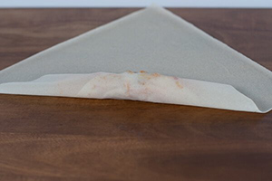
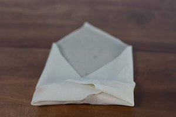
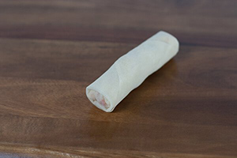

Prep Time: 30 minutes
Cook Time: 10 minutes
Total Time: 40 minutes
Lift the bottom corner up and begin rolling until you reach halfway up.
Fold over the left side, and then the right side towards the center.
Continue folding up with a tuck-roll-tuck-roll motion. Dip your fingers into the cornstarch slurry and brush all over the final top corner. Finish up the roll, seal and place seam side down.
 Images Sources